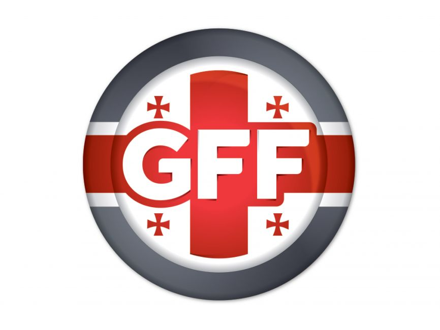

საქართველოს ეროვნული საფეხბურთო ნაკრები — წარმოადგენს საქართველოს საერთაშორისო ტურნირებზე და შეხვედრებზე ფეხბურთში. ნაკრების კონტროლს და ხელმძღვანელობას ახორციელებს საქართველოს ფეხბურთის ფედერაცია, რომელიც ფიფას და უეფას წევრია 1992 წლიდან. საშინაო შეხვედრებს თბილისში, ბორის პაიჭაძის ეროვნული სტადიონზე მასპინძლობს. საქართველოს ეროვნული ნაკრების საუკეთესო შედეგებია 1996 წლის ევროპის ჩემპიონატისა და 2002 წლის მსოფლიო ჩემპიონატის საკვალიფიკაციო ეტაპზე დაკავებული მესამე ადგილები. ასევე, 2018–19 უეფას ერთა ლიგის მეოთხე D დივიზიონის პირველ ჯგუფში და 2022–23 უეფას ერთა ლიგის მესამე C დივიზიონის მეოთხე ჯგუფში დაკავებული პირველი ადგილები, რამაც ნაკრებს უეფას ევრო 2020-ის და ევრო 2024-ის შესარჩევი პლეი-ოფის საგზურები მოუპოვა. 2023 წლის 26 ოქტომბრის მდგომარეობით, საქართველოს ეროვნული ნაკრები ფიფას რეიტინგში 76-ე ადგილზეა.
